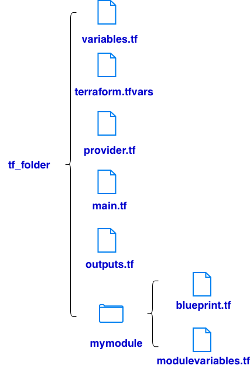

# variables.tf
variable "project_id" {
description = "GCP project ID"
type = string
}
variable "region" {
description = "Default GCP region"
type = string
default = "us-central1"
}
# terraform.tfvars
project_id = "storagedev-485602"
region = "us-east1"
# provider.tf
# define needed terraform version
terraform {
required_version = ">= 1.5.0"
}
# configure provider
provider "google" {
project = "${var.project_id}" # var.project_id
region = "${var.region}" # var.region
}
# blueprint.tf
# define a blueprint for deploying vm
resource "google_compute_instance" "vm_instance" {
name = "${var.instance_name}" # var.instance_name
zone = "${var.instance_zone}" # var.instance_zone
machine_type = "${var.instance_type}" # var.instance_type
boot_disk {
initialize_params {
image = "debian-cloud/debian-11"
}
}
network_interface {
network = "${var.instance_network}" # var.instance_network
access_config {
# Allocate a one-to-one NAT IP to the instance
}
}
}
# modulevariables.tf
# define variables in the blueprint.tf
variable "instance_name" {}
variable "instance_zone" {}
variable "instance_type" {
default = "e2-micro"
}
variable "instance_network" {}
# main.tf
# Create the mynetwork network
resource "google_compute_network" "mynetwork" {
name = "mynetwork"
# RESOURCE properties go here
auto_create_subnetworks = "true"
}
# Add a firewall rule to allow HTTP, SSH, RDP and ICMP traffic on mynetwork
resource "google_compute_firewall" "mynetwork-allow-http-ssh-rdp-icmp" {
name = "mynetwork-allow-http-ssh-rdp-icmp"
# RESOURCE properties go here
network = google_compute_network.mynetwork.self_link
allow {
protocol = "tcp"
ports = ["22", "80", "3389"]
}
allow {
protocol = "icmp"
}
source_ranges = ["0.0.0.0/0"]
}
# Create the mynet-vm-1 instance
module "mynet-vm-1" {
source = "./mymodule"
instance_name = "mynet-vm-1"
instance_zone = "us-east1-b"
instance_network = google_compute_network.mynetwork.self_link
}
# Create the mynet-vm-2" instance
module "mynet-vm-2" {
source = "./mymodule"
instance_name = "mynet-vm-2"
instance_zone = "us-east1-c"
instance_network = google_compute_network.mynetwork.self_link
}
# initialize project
terraform init
# create plan
terraform plan
# execute plan
terraform apply
# inspect infrastructure
terraform show
# display selected values
terraform output
# change tf files
# change changes
terraform plan
# make changes
terraform apply
terraform detroy